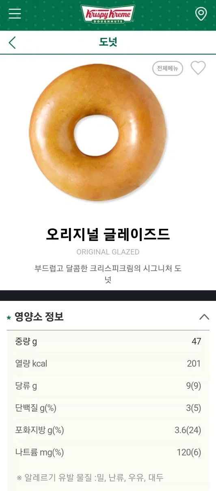
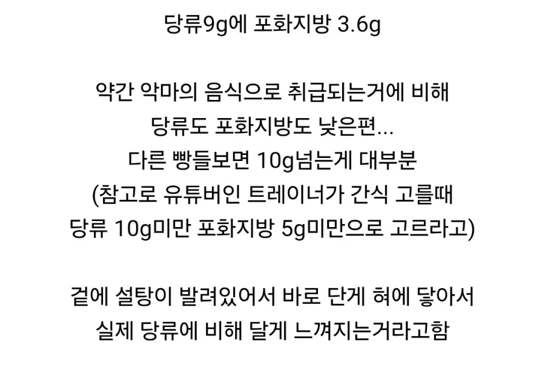

저걸 근데 하나만 먹지 않잖아 앉은자리에서 더즌 쌉가능인데
응??
뭐 멸치야

사람 아니야
햄최몇?
나도 최소3개스타트
손 인증 가능하십니까
여기 대댓 단새끼들 싸그리 멸치죄로 사형시켜야댐
반박시 내말이 맞음
저거 한번 먹으면 두세개는 먹자나
저건 3개가 1개로봐야지
밀가루 반죽은 당류랑 별로 다를것도 없지 싶어..
ㄹㅇ 밀가루+설탕 = 과식하면 좆됨
ㅇㅈ... 탄수나 당이나...
탄수화물도 얼마인지 봐야됨
왜 맛있는건 건강에 나쁠까
건강이 나쁜건 저런걸 매일먹어서 그런거임
하지만 하나만 먹는 사람은 없다
총 탄수화물은 22g정도네
중량이 낮으니까 상대적으로 낮아보이지
당연한거 아냐?
글쓴애는 비율이란걸 모르는듯
유튭보는데 삶은감자랑 팝콘이 엄청 칼로리 낮다는데
그래서 한때 간식으로 팝콘 먹었었는데 묵직한 느낌이 없어서 존나게 먹게됨 ㅋㅋ
하지만 gi지수 엄청 높음
ㅇㅇ 이게핵심인디
탄수를 안적으면 어떻게해, 튀긴 밀가루는 흡수율 높은 탄수라 설탕과ㅡ다르지ㅡ않거늘
짤에는 없지만 탄수화물이 22g임 당류는 전부 탄수화물이라고 보면 됨 운동하면서 먹는다면 괜찮은데 저걸 앉아서 간식으로 먹는게 문제지
아니 탄수화물이 문제라고
저거 6개 한박스 금방 먹음
커피랑 상성이 좋아
우유나 커피랑 먹음 큰일나긴해ㅋㅋㅋ 너무 많이먹어서 ㅋㅋㅋ
건강 따지면서 탄수화물 언급만 쏙빼는게ㅋㅋ
멍청한거임 아니면 바이럴임?
많이 쳐드세요
탄수화물은 그렇다 처도 칼로리가 한개에 200인데?ㅋㅋㅋㅋ
밥이랑 비교해보니 밥 50g의 칼로리 80몇 나오는데 저건 47g에 칼로리 200kal인데 당연히 살찌겟네 영양성분적으론 지방이 좀더 함유된거 외엔 큰 차이가 없지만 칼로리가 2배 넘게 차이나네 ㅋㅋㅋㅋ
'하나'
근데 보통 6개는 먹잖아 밥 대신 먹을 땐 더즌 다 먹고
베지밀 같은거 당류 10g 이더라 깜놀랬음
ㅇㅇ그런 당많은두유가 건강식품빙자한 건강망치는음식임.그래서 몇년전부터 제로열풍에맞춰 저당두유가 많이팔림.
저거 6개 꾹꾹 누르면 딱 1개 두께가 되더라
그러면 약간 말렌카 같은 느낌 남
근데 저거 존나 맛있긴 해
저걸 4개 먹어야 콜라 한캔 설탕이라고? 호오
와 진짜? 개신기하네
오늘부터 더즌 한 판씩 사먹는다.